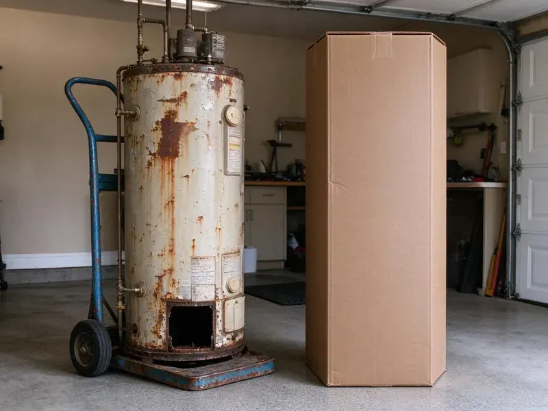

Pipe Replacement in Taunton, MA
Neat cuts, clean patches. Pipe replacement for Taunton, MA homes.
- Certified Plumbers
- Fast Repipe Scheduling
- Flexible Scheduling
- PEX-A and Copper Options

Replace That Old Galvanized Pipe in Taunton, MA.
We pull the permit and book the inspector for you.
Pipe Replacement in Taunton, MA
BWM Plumbing offers two main materials. PEX-a and copper. PEX runs in long flexible lengths with fewer fittings, costs less and goes in faster, while copper has a long track record and handles high heat well, and we explain the trade-offs before you choose. Both last decades.
Our expertise includes:
- Polybutylene replacement
- Whole-home repipes with PEX or copper
- Drywall patching after repipes

Additional Plumbing Replacement Services in Taunton, MA
When repairs are no longer enough, our replacement services in Taunton, MA deliver modern, efficient equipment installed right.


Customers
Why Choose BWM Plumbing for Pipe Replacement in Taunton, MA?
Planning cuts the mess. We map the routes before cutting drywall. Running lines through the attic or crawlspace when possible means fewer openings, and the ones we do make are placed where patching is easy and hidden where we can. Less patching.
- Code Compliant, Permits get pulled and inspections passed.
- Clear Updates, We tell you the plan each morning. No guesswork.
- Skilled Crews, Our plumbers repipe homes regularly and know how to keep openings small.
Citywide Coverage
Older homes are a big part of our work. Some still have original pipe from decades ago. We bring materials and tools for galvanized removal, poly replacement and copper repairs, which saves you time. Organized work.
Experienced Team
Our team knows the pipe materials used in different eras of Massachusetts construction. Each era used something different. That knowledge helps us predict trouble spots and likely leak points so the job goes smoother. Experience counts.
Safety-First Approach
Lead and asbestos can show up in older homes. We know what to look for. If we find suspect materials near the work area, we stop and talk to you about testing and safe handling before continuing. Safety first.
Trusted Certified Taunton Plumbing Services Professionals
At BWM Plumbing, we are proud to offer certified plumbing services throughout Taunton, MA. Credentials matter in this trade. Our plumbers hold recognized industry credentials, and they follow strict safety and quality rules on every repair, installation and maintenance call we run.
Call Us Now PHCC Plumbing Contractor Recognition
PHCC Plumbing Contractor Recognition Better Business Bureau (BBB) Accreditation
Better Business Bureau (BBB) Accreditation Angi Certified Pro
Angi Certified Pro ISO 9001 Quality Management Certification
ISO 9001 Quality Management CertificationRepiping and Pipe Replacement Options in Taunton, MA
PEX Pipe Installation in Taunton
PEX costs less than copper and goes in faster. Scale and rust do not affect it. Much of the public water in Massachusetts is soft and slightly acidic, which is easy on fixtures but can slowly eat through copper pipe. We use PEX-a with expansion fittings or PEX-b with crimp rings depending on the job, choosing a layout that fits the house. Fewer joints, fewer leaks.

Galvanized Pipe Removal in Taunton, MA
We often leave old galvanized pipe in the wall. It is disconnected and capped, while new lines run beside it, which keeps drywall damage low. Only accessible pipe comes out.
Galvanized Pipe Replacement in Taunton, MA
Galvanized steel was common before the 1960s. The zinc wears off and the steel rusts inside. Over decades the opening shrinks, pressure drops and the water turns brown after sitting, while threaded joints corrode through first. Replacing it is the only fix.
Slab Leak Pipe Repair and Replacement in Taunton
Water under a slab shows up as a warm spot on the floor, a sound of running water, or a meter that spins with everything off. We locate the leak first. Then you have a choice between breaking the slab to fix that spot or rerouting the line through walls or the attic, and rerouting often costs less and avoids future slab leaks on that line. We explain both.
Corroded Pipe Replacement in Taunton, MA
Corrosion shows up as green or white crust on copper, rust on steel, or pinholes that drip. Water chemistry plays a role. We replace corroded sections or the whole system depending on how widespread the damage is, including fittings near the heater. Look at the joints.
Commercial Pipe Replacement in Taunton
Commercial buildings often have larger supply lines and more fixtures. Downtime costs money. We plan pipe replacement in phases whenever the layout allows it, keeping restrooms and kitchens running while we work on other sections. Night work available.
Drain Pipe Replacement in Taunton, MA
Drain lines fail too. Cast iron cracks and scales. We replace cracked cast iron, failing ABS or old galvanized drains with PVC, checking slope and venting so the new drains flow freely. Camera first.

Whole-Home Repiping in Taunton
Repiping sounds bigger than it is. You can usually stay in the house. We work room by room, restore water most evenings, and keep dust down with plastic sheeting and drop cloths, finishing with smooth patches ready for paint. Clean finish.
Repiping Near Taunton, MA
Local plumbers know local homes. Construction styles vary. That affects how we route new pipe and how many openings we need, and with homes in Taunton it is the kind of thing we usually know before arriving. We still inspect.
Searching 'pipe replacement near me' usually means a leak or rusty water is already showing up. Our crews stay close to Taunton. Our plumbers can inspect quickly, so most jobs start within days. Fast scheduling is normal.
BWM Plumbing at a Glance
- Fully licensed plumbing team covering Taunton, MA
- Same-day appointments and 24/7 emergency response
- Clear written estimates, no hidden fees
- 4.9-star rated by 434+ Massachusetts customers
Taunton Map
Taunton Information
- Population
- 60,412
- Area codes
- 508/774/401
- Service area
- Taunton and communities within 40 miles
- Nearby
- Fall River, Brockton, New Bedford, Weymouth Town
Galvanized pipe rusts shut from the inside, and polybutylene tends to fail suddenly, which is why so many older homes need repiping.
Talk to a Plumber
Reach out to BWM Plumbing for honest, reliable plumbing from people who know the trade in Taunton, MA.
Our Specialized Plumbing Services in Taunton, MA
At BWM Plumbing, you get every kind of plumbing service from one company across Taunton, MA. We go from leak detection all the way to full system installations, for homes and commercial buildings, and we do it quickly at a fair price. Explore our core services below:


How We Replace Pipe in a Home in Taunton, MA
From the first inspection to the final patch, BWM Plumbing walks you through each step.
Call and Describe It
Call BWM Plumbing at (857) 335-4894 and tell us what you are seeing. Where the leaks or rust show up helps a lot.
Inspect the Pipe
We look at the pipe at the meter, heater and fixtures in Taunton to see how far the damage goes.
Plan and Price
We give you a plan and a written quote. Routes and openings get mapped.
Frequently Asked Questions About Pipe Replacement in Taunton
A small section replacement might cost $500 to $2,500. Whole-home jobs commonly land between $4,000 and $15,000. The price depends on the extent of the damage, the type of pipe being replaced, the new material you choose, and how many walls need opening. We price after inspecting.
A written labor warranty from us. Manufacturers cover the pipe.
In most cities, yes. We pull the permit.
Yes, in writing. Labor is covered by us. Pipe and fitting manufacturers cover the materials separately, often for 25 years or more on PEX installed by a licensed plumber. Details on your estimate.
A few days for most homes. Bigger homes take longer.
A single section often takes a few hours. A whole-home repipe usually takes two to four days for a typical house, with patching after the inspection. Larger homes take longer.
Usually, yes. Repipes almost always need one. An inspector checks the new pipe before the walls close, so all the paperwork is on us. You keep the signed copy.
Possibly, for small repairs. Big jobs need a licensed plumber.
What Our Customers Say About Our Plumbing Experts

Robert G.
The camera showed a full break in our clay sewer line near the street. BWM Plumbing replaced it with a trenchless pipe burst, so the only digging was two small pits in the yard. They let us watch the footage before and after.
Sewer Line Replacement · New Bedford, MA
Jessica T.
We were adding a gas range in a kitchen remodel and needed a new line run from the meter. The plumber pulled the permit, ran the pipe through the crawl space, and had it inspected and approved within the week.
Gas Line Repair · Weymouth Town, MA
Karen W.
After our third pinhole leak in copper, we stopped patching. BWM Plumbing gave us a written plan room by room and repiped the house in PEX while we stayed in it. The crew covered our floors every morning and cleaned up every night.
Repiping · Fall River, MASofia M.
Two new toilets went in during one visit. The tech set them on new wax rings and swapped the old supply lines. He also noticed our bathroom faucet dripping and replaced the cartridge while he was there. No mess left behind.
Toilet Installation · Taunton, MA
Paul B.
Our pit pump ran nonstop even in dry weather. The plumber found the check valve was stuck open, so the same water kept cycling back into the pit. New valve, new float switch, done in an hour. It runs quiet now.
Sump Pump · Weymouth Town, MALaura S.
Our 40 gallon tank started leaking from the bottom after thirteen years. The tech hauled the old one out, set a new unit with a fresh expansion tank, and had hot water running in about four hours. He took the old tank with him too.
Water Heater Replacement · Weymouth Town, MA